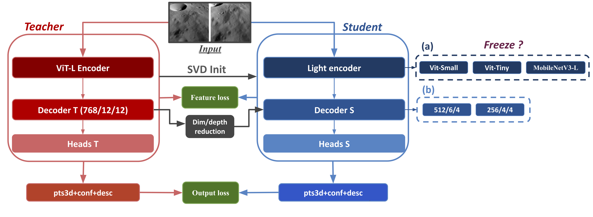

Geometric Foundation Model Distillation
for Efficient Lunar 3D Reconstruction
Abstract
Large geometric foundation models (e.g. MASt3R, 688.6M parameters) achieve state-of-the-art 3D reconstruction from stereo pairs but are prohibitive to deploy on resource-constrained platforms — particularly relevant for lunar space missions. We propose a distillation framework combining (i) SVD-based decoder initialization from the teacher (Eckart–Young optimal), (ii) a feature-alignment loss at intermediate ViT layers, and (iii) full encoder fine-tuning.
Method

Choose a stereo pair
Inference was run with our actual checkpoint-50 for every model on each pair. Pick one — all comparisons below update accordingly.
Citation
If you use this work, please cite the paper below.
Acknowledgements
We thank the IRIT and Airbus Defence and Space teams for their support, and the authors whose names were omitted from the official ECCV record due to a submission error that could not be corrected after acceptance.